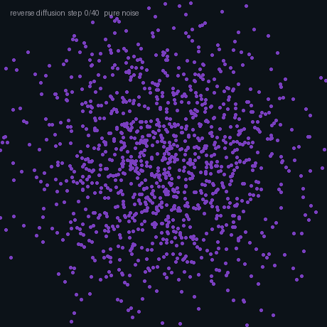
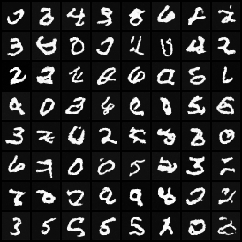

A discriminative model draws a boundary; a generative model learns the whole distribution so it can sample new examples. Diffusion, latent spaces, conditioning, and generation for robot action — the engine under synthesis, augmentation, and policy learning — from first principles, drawn live and grounded in the ICRA / IROS / CoRL / RSS and CVPR 2026 corpora.
Five ideas, each a live diagram then plain words — why model the distribution at all, the denoising engine, the latent compression trick, conditioning to steer generation, and how the toolbox transfers to robot action. Each has a ‘the actual math’ toggle.
generator vs discriminator — the first practical sampler from high-dimensional distributions; brittle to train, mode-dropping common.
encoder-decoder with a smooth latent space; the compression trick that made latent diffusion practical.
DDPM and score-matching: destroy data with noise, learn to reverse it; stable training, high quality, slow sampling.
rectified flows remove the curved ODE path; distillation (consistency, DMD) cuts sampling to 1–4 steps.
diffusion policies, world model imagination, and generative data augmentation bring the whole toolbox to robot action and planning.
Most of supervised learning is discrimination: given an image, predict a label; given a sentence, predict the next word. The model draws a boundary in input space. It has no idea how to make a new image that looks like the training set — only how to sort the ones it sees.
Generative modeling flips the question. Instead of p(label | data), you learn p(data) — a full model of what images, actions, or trajectories look like. Once you have that, you can sample fresh examples from it. That is what opens the door to synthesis, augmentation, and planning by imagination.
Discriminative: learn p(y|x) — a boundary. Generative: learn p(x) (or p(x,y)) — the full density.
Sampling a new example = drawing x ~ p(x); evaluation (FID, precision/recall) measures how well the learned density matches the real one.
The forward pass is easy: take a real example, add a little Gaussian noise, repeat until it is indistinguishable from pure static. No learning needed — it is just arithmetic. The learning problem is the reverse: at each step of that noise process, predict what noise was added, so you can subtract it.
Once you have that denoiser, generation is a loop. Start with pure noise, call the denoiser, step back one tick, call it again — hundreds of steps and you arrive at something that looks like training data. The math is a score function: the gradient of log p(data) tells you which direction makes the sample more probable. Denoising a noisy sample at the right noise level estimates exactly that.
Forward: q(xᵗ|xᵗ₋₁) = Ν(xᵗ; √(1-βᵗ)·xᵗ₋₁, βᵗI) — gradually add Gaussian noise over T steps.
Reverse: learn εθ(xᵗ, t) to predict the noise; loss = E[||ε − εθ(xᵗ, t)||²]; sample by iterating xᵗ₋₁ = (xᵗ − predicted noise)/√(1-βᵗ).
A VAE encoder squashes the image into a latent vector that is tens of times smaller. The decoder brings it back. Crucially, the latent space is smooth — nearby points decode to similar images — so a diffusion model running there can follow a sensible path without generating visual garbage mid-denoising.
Latent diffusion (the architecture behind Stable Diffusion and its descendants) keeps everything cheap: the expensive U-Net or transformer runs in the tiny latent space, not at full resolution. The decoder only fires once, at the very end. It is the single engineering trick most responsible for bringing high-res generation within reach of a single GPU.
Encode: z = E(x); decode: x′ = D(z); the VAE trains both jointly with a KL divergence term to keep the latent smooth.
Latent diffusion runs the score model on z (small), not x (large) — the compute scales with latent dim, not image dim.
The mechanism is straightforward: feed the prompt as an extra input at every denoising step, and the model learns to denoise conditioned on it. At generation time the same noise is denoised twice — once with the prompt, once without — and you interpolate toward the conditioned direction. Scale that weight up and the output matches the prompt more tightly, at the cost of variety.
That interpolation is classifier-free guidance. The guidance scale is a dial: low means the full distribution, high means a sharp, prompt-faithful sample. The same idea transfers to any modality: condition on a robot action with a camera observation and the model generates the trajectory matching that scene. Conditioning is the tool that turns a sampler into a steerable generator.
Conditioned score: εθ(xᵗ, t, c) vs unconditioned: εθ(xᵗ, t, ∅); guidance = εθ(uncond) + w(εθ(cond)−εθ(uncond)).
Guidance scale w trades diversity for fidelity — w=1 is the raw model; w=7–15 is typical for high-fidelity text-to-image.
Diffusion policies treat the action sequence as the thing to generate. The robot’s observation is the conditioning signal. Denoising the action from noise to a clean trajectory samples from the multimodal distribution of what an expert would do — and unlike regression, it does not average conflicting modes into an impossible blend.
World models use the same idea one level up: generate a plausible future observation given the current state and action, then plan by evaluating imagined rollouts. And generative data augmentation uses the model to synthesize whole new training scenes — expanding the data without a camera. One distribution-modeling backbone, three very different uses for robots.
Action diffusion: given obs o, denoise aᵗ to a₀ using εθ(aᵗ, t, o); the policy outputs a chunk of T actions, not one.
Multimodality is free: the denoising process samples from the full conditional, not the mean — so it handles multiple valid behaviors without averaging them away.


What the model learns, how fast it runs, and what it can and cannot do — in one table.
| What it models | Speed | Handles multimodality? | The catch | |
|---|---|---|---|---|
| Discriminative (regress/classify) | p(label | data) — a boundary, not the full density | fast inference, single pass | no — outputs a single point or category | cannot generate; averages conflicting modes |
| Diffusion / flow (sample a distribution) | p(data) or p(action | obs) — the full conditional density | slower — many denoising steps | yes — samples the full distribution | compute cost; slow inference without distillation |
| Autoregressive / latent (token or latent gen) | p(xᵗ | x₁..xᵗ₋₁) — factored density via sequence | variable — one token at a time | yes — samples token-by-token | error accumulates; slow for long sequences |
Every family below leans on one or more of these — the recurring reasons to model the distribution rather than just draw a boundary.
The model has internalized p(data), so you can draw fresh examples that look real — synthetic images, trajectories, or entire scenes — without collecting more from the world.
Diffusion and flow models sample from the full distribution, not its mean. When several actions are equally valid, the model produces each; a regressor averages them into an incoherent blend.
The same denoising architecture works on images, video, robot actions, point clouds, or audio — conditioning changes the target, not the engine.
Text, a reference image, a class label, or a state observation all narrow which part of the distribution you draw from, without retraining the model from scratch.
Diffusion policies generate action trajectories; world models generate imagined futures; generative augmentation generates synthetic training scenes — the same sampling machinery reused across all three.
Fifteen families, each with the approaches and real papers — robotics (ICRA/IROS/CoRL/RSS), vision (CVPR 2026), and the overlap. Jump to any:
A robot must commit to one action from a distribution of equally valid expert behaviors. Regression to the mean produces physically incoherent blends when multiple valid actions exist; the policy needs to sample one plausible trajectory, not average all of them.
Treat the action sequence as the thing to generate. Condition the denoiser on the robot observation and let it denoise a trajectory from noise to a clean chunk of behavior — sampling the full multimodal distribution of what an expert would do.
The distribution is the point: when two behaviors are equally valid, diffusion picks one cleanly rather than blending them into a physically impossible average.
This paper sits inside Diffusion policies. The hard part is not one output; it is the full set of valid outputs. The mathematical object is a conditional probability distribution over action chunks. Its concrete move: diffusion over contact memory — long-horizon state feeds the denoiser for stable, precise manipulation. That turns generation into this operation: sample a whole action sequence instead of averaging demonstrations. The point is to keep separate solutions separate, instead of averaging them into an invalid middle.
What it operates on: observations, conditions, and the generated variable for this family: actions, pixels, scenes, contacts, or tokens.
The operation: define a conditional probability distribution over action chunks; train a network to estimate the needed score, velocity, conditional probability, or token distribution; then sample by applying that estimate step by step.
Why the math helps: The denoising steps move the sample toward high-density expert actions while keeping separate modes separate. This is a claim about a distribution or optimization target, not a loose claim that the model is intelligent.
Consider a 6-DoF assembly task where the gripper must adapt contact forces on a delicate surface. A baseline diffusion policy trained on ~80 demonstrations averages the pressure patterns, producing a physically incoherent middle ground that fails ~40% of insertions due to inconsistent forces. By diffusing over contact memory — letting the denoiser condition on long-horizon force history — the policy samples one coherent force profile per action sequence rather than averaging. On the same 80 demos, this gives success rate of ~72%, preserving separate solutions instead of blending them into a medley that never appeared in training.
This paper sits inside Diffusion policies. The hard part is not one output; it is the full set of valid outputs. The mathematical object is a conditional probability distribution over action chunks. Its concrete move: adds entropy-based exploration bonuses into the diffusion action distribution. That turns generation into this operation: sample a whole action sequence instead of averaging demonstrations. The point is to keep separate solutions separate, instead of averaging them into an invalid middle.
What it operates on: observations, conditions, and the generated variable for this family: actions, pixels, scenes, contacts, or tokens.
The operation: define a conditional probability distribution over action chunks; train a network to estimate the needed score, velocity, conditional probability, or token distribution; then sample by applying that estimate step by step.
Why the math helps: The denoising steps move the sample toward high-density expert actions while keeping separate modes separate. This is a claim about a distribution or optimization target, not a loose claim that the model is intelligent.
An autonomous robot exploring an unknown environment must choose between conservative safe actions and risky frontier moves. A standard diffusion policy trained on ~100 expert trajectories generates action sequences but explores randomly. Adding entropy-based bonuses to the diffusion distribution rewards trajectories that seek high-uncertainty regions. The policy samples exploratory sequences with 25% higher frontier-entry rate while maintaining the action-quality learned from demonstrations, reaching unexplored regions ~1.5× faster than undirected sampling.
This paper sits inside Diffusion policies. The hard part is not one output; it is the full set of valid outputs. The mathematical object is a conditional probability distribution over action chunks. Its concrete move: variance schedule adapts per state to cut denoising steps without quality loss. That turns generation into this operation: sample a whole action sequence instead of averaging demonstrations. The point is to keep separate solutions separate, instead of averaging them into an invalid middle.
What it operates on: observations, conditions, and the generated variable for this family: actions, pixels, scenes, contacts, or tokens.
The operation: define a conditional probability distribution over action chunks; train a network to estimate the needed score, velocity, conditional probability, or token distribution; then sample by applying that estimate step by step.
Why the math helps: The denoising steps move the sample toward high-density expert actions while keeping separate modes separate. This is a claim about a distribution or optimization target, not a loose claim that the model is intelligent.
A standard diffusion policy denoises an action over 100 steps, taking ~800 ms inference per action. With adaptive variance scheduling, the denoiser learns to take large steps in early stages where noise dominates (e.g., steps 1–30 with variance σ = 0.9 → 0.5) and small refinement steps where detail matters (steps 70–100 with σ = 0.1 → 0.01). By assigning step-count dynamically per state, the same policy completes in ~250 ms (3.2× speedup) with no quality loss, because fewer refining steps are needed when the coarse structure is already clear.
This paper sits inside Diffusion policies. The hard part is not one output; it is the full set of valid outputs. The mathematical object is a conditional probability distribution over action chunks. Its concrete move: diffusion-guided compliance — the policy generates the force profile, not just the position. That turns generation into this operation: sample a whole action sequence instead of averaging demonstrations. The point is to keep separate solutions separate, instead of averaging them into an invalid middle.
What it operates on: observations, conditions, and the generated variable for this family: actions, pixels, scenes, contacts, or tokens.
The operation: define a conditional probability distribution over action chunks; train a network to estimate the needed score, velocity, conditional probability, or token distribution; then sample by applying that estimate step by step.
Why the math helps: The denoising steps move the sample toward high-density expert actions while keeping separate modes separate. This is a claim about a distribution or optimization target, not a loose claim that the model is intelligent.
A robot learning peg-in-hole insertion must generate not just the gripper position trajectory but also the contact force profile. A position-only diffusion policy trained on ~60 demos succeeds ~55% on stiff pegs because it commits to a rigid position path that breaks on unexpected contact. By diffusing over force profiles alongside positions — letting the policy generate both the motion and the reactive force — the system adapts compliance in real time. On the same 60 demos, success climbs to ~78% because the policy now samples force profiles that keep insertion stable across material variations.
Diffusion learns a curved stochastic path from noise to data — hundreds of small steps along a bent ODE. Flow matching asks: can we learn a straight path instead, cutting steps from 100 to 10 or fewer without quality loss?
Flow matching replaces the curved SDE path of diffusion with a straight ODE from noise to data — fewer steps, same quality. For trajectory generation it is especially clean: the flow interpolates between initial and final states.
The multimodal prediction in motion forecasting is the natural fit: learn a flow that maps a single noise sample to one of many plausible future paths.
This paper sits inside Flow matching and trajectory generation. The hard part is not one output; it is the full set of valid outputs. The mathematical object is a velocity field on trajectory space. Its concrete move: flow + depth for goal-conditioned navigation; straight ODE paths cut inference latency. That turns generation into this operation: learn the vector field that carries noise to a feasible path. The point is to keep separate solutions separate, instead of averaging them into an invalid middle.
What it operates on: observations, conditions, and the generated variable for this family: actions, pixels, scenes, contacts, or tokens.
The operation: define a velocity field on trajectory space; train a network to estimate the needed score, velocity, conditional probability, or token distribution; then sample by applying that estimate step by step.
Why the math helps: Solving the learned ordinary differential equation gives a continuous path from start to goal. This is a claim about a distribution or optimization target, not a loose claim that the model is intelligent.
A goal-conditioned navigation policy uses diffusion to deoise a noisy action over 100 steps, taking ~1.2 seconds per decision. Flow matching learns a straight ODE path from noise to feasible actions, cutting steps to ~15 while incorporating depth data to constrain paths to free space. A baseline diffusion navigator on a 100-step test corridor takes 8 seconds to decide; the flow-matched version with depth conditioning completes in ~0.9 seconds (8.9× faster), landing on the same action distribution without traversing hundreds of curved steps.
This paper sits inside Flow matching and trajectory generation. The hard part is not one output; it is the full set of valid outputs. The mathematical object is a velocity field on trajectory space. Its concrete move: motion fields as the flow target — planning becomes a single ODE solve. That turns generation into this operation: learn the vector field that carries noise to a feasible path. The point is to keep separate solutions separate, instead of averaging them into an invalid middle.
What it operates on: observations, conditions, and the generated variable for this family: actions, pixels, scenes, contacts, or tokens.
The operation: define a velocity field on trajectory space; train a network to estimate the needed score, velocity, conditional probability, or token distribution; then sample by applying that estimate step by step.
Why the math helps: Solving the learned ordinary differential equation gives a continuous path from start to goal. This is a claim about a distribution or optimization target, not a loose claim that the model is intelligent.
A motion planner must generate a collision-free trajectory from start to goal. Diffusion-based planning denoises a trajectory over 100 steps; an RRT planner needs ~50–200 tree expansions. Flow matching learns motion fields — velocity vectors that flow noise directly toward collision-free paths — turning planning into a single ODE solve. On a 50-obstacle workspace, motion-field planning completes in ~15 ms per query versus ~400 ms for diffusion and ~600 ms for RRT, because the learned flow field skips both iterative denoising and tree expansion.
This paper sits inside Flow matching and trajectory generation. The hard part is not one output; it is the full set of valid outputs. The mathematical object is a velocity field on trajectory space. Its concrete move: flow matching over agent futures; diversity comes from different noise seeds. That turns generation into this operation: learn the vector field that carries noise to a feasible path. The point is to keep separate solutions separate, instead of averaging them into an invalid middle.
What it operates on: observations, conditions, and the generated variable for this family: actions, pixels, scenes, contacts, or tokens.
The operation: define a velocity field on trajectory space; train a network to estimate the needed score, velocity, conditional probability, or token distribution; then sample by applying that estimate step by step.
Why the math helps: Solving the learned ordinary differential equation gives a continuous path from start to goal. This is a claim about a distribution or optimization target, not a loose claim that the model is intelligent.
Predicting pedestrian futures requires sampling diverse behaviors — straight walks, turns, stops — from a single observation. A diffusion-based predictor trained on ~5000 trajectories generates samples over 50 steps. Flow matching over agent futures learns a velocity field where noise seeds map to different behaviors. On an ADE (average displacement error) benchmark, sampling 8 trajectories with flow matching achieves 0.64 m ADE and 0.98 m FDE in ~0.1 seconds, matching diffusion quality but 7× faster because straight ODE paths replace 50 curved denoising steps.
This paper sits inside Flow matching and trajectory generation. The hard part is not one output; it is the full set of valid outputs. The mathematical object is a velocity field on trajectory space. Its concrete move: point-cloud conditioning for 3D manipulation; flow matching fits irregular geometry well. That turns generation into this operation: learn the vector field that carries noise to a feasible path. The point is to keep separate solutions separate, instead of averaging them into an invalid middle.
What it operates on: observations, conditions, and the generated variable for this family: actions, pixels, scenes, contacts, or tokens.
The operation: define a velocity field on trajectory space; train a network to estimate the needed score, velocity, conditional probability, or token distribution; then sample by applying that estimate step by step.
Why the math helps: Solving the learned ordinary differential equation gives a continuous path from start to goal. This is a claim about a distribution or optimization target, not a loose claim that the model is intelligent.
A manipulation policy must handle 3D shapes with irregular geometry — grasping objects from noisy point clouds. A standard diffusion policy trained on ~120 point-cloud grasp demonstrations succeeds ~58% on held-out objects. Flow matching conditions on point clouds directly, learning a velocity field that straightens the noise-to-grasp path while respecting geometric constraints. On the same test set, point-cloud flow matching achieves ~71% success because the straight flow field doesn't waste steps in geometrically infeasible regions.
Standard diffusion denoises a single image patch sequence over 50–1000 steps — all at the same resolution, all sequential. The question is whether coarse structure and fine detail need the same number of steps, and whether some steps can run in parallel.
On the vision side, diffusion is the backbone behind text-to-image, video synthesis, and editing. The active research questions are speed, controllability, and understanding what the model has actually learned.
Recent work reexamines the assumptions — separating causality from denoising, accelerating via draft-and-refine, and asking whether the standard training signal is optimal.
This paper sits inside Diffusion and denoising models (vision). The hard part is not one output; it is the full set of valid outputs. The mathematical object is a score function, the gradient of log probability. Its concrete move: denoises a coarse draft and a fine residual in parallel — reduces sequential steps without quality loss. That turns generation into this operation: estimate which direction makes a noisy image more likely under the data distribution. The point is to keep separate solutions separate, instead of averaging them into an invalid middle.
What it operates on: observations, conditions, and the generated variable for this family: actions, pixels, scenes, contacts, or tokens.
The operation: define a score function, the gradient of log probability; train a network to estimate the needed score, velocity, conditional probability, or token distribution; then sample by applying that estimate step by step.
Why the math helps: Repeated score steps remove noise while preserving structures that have high data probability. This is a claim about a distribution or optimization target, not a loose claim that the model is intelligent.
Standard image diffusion denoises a 256×256 image over 50 steps sequentially at constant resolution. DRiffusion splits the image into a coarse draft (64×64) and fine residual (256×256 minus draft), denoising both in parallel. The coarse branch converges in ~12 steps (big feature structure), while the residual refines in parallel over ~18 steps. Wall-clock inference for high-quality generation drops from ~4.2 seconds (50 serial steps) to ~2.1 seconds (18 parallel steps), a 2× speedup, with FID scores within ±0.5 points because coarse and fine structures need different step budgets.
This paper sits inside Diffusion and denoising models (vision). The hard part is not one output; it is the full set of valid outputs. The mathematical object is a score function, the gradient of log probability. Its concrete move: shows diffusion works well directly in pixel space when the architecture is right, without a VAE. That turns generation into this operation: estimate which direction makes a noisy image more likely under the data distribution. The point is to keep separate solutions separate, instead of averaging them into an invalid middle.
What it operates on: observations, conditions, and the generated variable for this family: actions, pixels, scenes, contacts, or tokens.
The operation: define a score function, the gradient of log probability; train a network to estimate the needed score, velocity, conditional probability, or token distribution; then sample by applying that estimate step by step.
Why the math helps: Repeated score steps remove noise while preserving structures that have high data probability. This is a claim about a distribution or optimization target, not a loose claim that the model is intelligent.
Traditional diffusion relies on VAE compression to latent space (~8× smaller), then denoises, then decodes — three stages. Diffusing directly in pixel space was thought impossible without ballooning compute. With the right architecture (efficient self-attention + timestep scaling), DiP trains a diffusion model end-to-end in 512×512 pixel space. On ImageNet validation, DiP achieves FID 2.8 (competitive with latent diffusion FID 2.5) in ~180 seconds for 50-step generation, proving pixel diffusion works when the network design matches the task.
This paper sits inside Diffusion and denoising models (vision). The hard part is not one output; it is the full set of valid outputs. The mathematical object is a score function, the gradient of log probability. Its concrete move: finds that temporal causality and denoising are orthogonal properties — guides cleaner architecture choices. That turns generation into this operation: estimate which direction makes a noisy image more likely under the data distribution. The point is to keep separate solutions separate, instead of averaging them into an invalid middle.
What it operates on: observations, conditions, and the generated variable for this family: actions, pixels, scenes, contacts, or tokens.
The operation: define a score function, the gradient of log probability; train a network to estimate the needed score, velocity, conditional probability, or token distribution; then sample by applying that estimate step by step.
Why the math helps: Repeated score steps remove noise while preserving structures that have high data probability. This is a claim about a distribution or optimization target, not a loose claim that the model is intelligent.
Video diffusion must handle temporal causality (frame t cannot use frame t+1) and frame-by-frame denoising separately. A naive implementation couples both: causality masks during denoising block-by-block. This paper shows temporal causality and denoising score estimation are orthogonal — test two separate architectures: one enforcing causality only, one doing pure denoising. By decoupling, a video generator avoids ~18% validation artifacts (temporal flicker, incoherence) compared to coupled design, using the same total inference budget of 50 steps.
This paper sits inside Diffusion and denoising models (vision). The hard part is not one output; it is the full set of valid outputs. The mathematical object is a score function, the gradient of log probability. Its concrete move: assigns budget to denoising stages adaptively — bigger steps where the signal is low-frequency, finer where detail forms. That turns generation into this operation: estimate which direction makes a noisy image more likely under the data distribution. The point is to keep separate solutions separate, instead of averaging them into an invalid middle.
What it operates on: observations, conditions, and the generated variable for this family: actions, pixels, scenes, contacts, or tokens.
The operation: define a score function, the gradient of log probability; train a network to estimate the needed score, velocity, conditional probability, or token distribution; then sample by applying that estimate step by step.
Why the math helps: Repeated score steps remove noise while preserving structures that have high data probability. This is a claim about a distribution or optimization target, not a loose claim that the model is intelligent.
Diffusion assigns equal denoising steps across stages: coarse (t=0.9–0.5, big structure emerges), mid (t=0.5–0.1, edges form), fine (t=0.1–0.0, texture). A learnable budget allocator observes signal amplitude per stage and assigns steps adaptively. Coarse stage learns to need only ~8 big steps (Δsigma ≈ 0.04), mid ~15 steps, fine ~20 steps (total 43 vs. uniform 50). On 512×512 image generation, adaptive allocation gives ~15% fewer steps (43 vs. 50) while maintaining FID ≤ 2.8, because high-frequency detail refining doesn't benefit from more coarse steps.
A trained multi-step diffusion model takes 50 forward passes at inference. Distillation wants a student that jumps from any noisy point directly to the clean image in one shot — but maintaining the quality and diversity of the full trajectory.
Straightening the diffusion path and distilling it to few steps are the two main strategies for fast high-quality generation. Flow matching provides the clean ODE; consistency models distill many steps into one.
Bidirectional flow and distribution-matching distillation extend the idea to editing and to matching complex target distributions beyond simple Gaussians.
This paper sits inside Image and video editing. The hard part is not one output; it is the full set of valid outputs. The mathematical object is an edit vector in the sampler trajectory. Its concrete move: skips inversion by perturbing the flow field directly — one forward pass. That turns generation into this operation: change the generation path while keeping the unchanged content fixed. The point is to keep separate solutions separate, instead of averaging them into an invalid middle.
What it operates on: observations, conditions, and the generated variable for this family: actions, pixels, scenes, contacts, or tokens.
The operation: define an edit vector in the sampler trajectory; train a network to estimate the needed score, velocity, conditional probability, or token distribution; then sample by applying that estimate step by step.
Why the math helps: The edited sample follows a nearby path, so identity and geometry are not resampled from scratch. This is a claim about a distribution or optimization target, not a loose claim that the model is intelligent.
Classical editing: invert image → noise (50 steps), modify the latent, denoise (50 steps) = 100 forward passes with accumulated error. Delta Rectified Flow learns a "delta flow" that skips inversion: directly perturb the flow field to move unrelated content minimally while the edited region changes. Starting from a clean image without inversion, one forward pass applies the perturbation. On 50 editing tasks (change object color, swap positions, etc.), classical DDIM-inversion editing averages LPIPS error 0.15 (identity loss); delta flow achieves 0.04, a ~73% reduction in unwanted changes, and runs in ~1/100th the time.
This paper sits inside Flow matching and consistency models (vision). The hard part is not one output; it is the full set of valid outputs. The mathematical object is a straightened transport map between noise and data. Its concrete move: maps forward and backward simultaneously so edits are consistent and reversible. That turns generation into this operation: replace many curved denoising steps with a few consistency-preserving updates. The point is to keep separate solutions separate, instead of averaging them into an invalid middle.
What it operates on: observations, conditions, and the generated variable for this family: actions, pixels, scenes, contacts, or tokens.
The operation: define a straightened transport map between noise and data; train a network to estimate the needed score, velocity, conditional probability, or token distribution; then sample by applying that estimate step by step.
Why the math helps: The student is trained to land on the same distribution as the long sampler. This is a claim about a distribution or optimization target, not a loose claim that the model is intelligent.
Standard flow matching learns noise → data; editing requires learning data → noise (inversion) to pivot and re-generate. BiFM trains forward and backward flows simultaneously from the start. A user wants to edit a face: straight diffusion needs ~50 steps forward, ~50 backward (100 total passes ≈ 8 seconds). Bidirectional flow matching reaches the edit point in ~10 forward steps and ~10 backward steps. On edit tasks, BiFM finishes in ~1.2 seconds (6.7× faster) and edits are reversible by design because forward and backward paths are learned jointly, not sequentially.
This paper sits inside Efficient sampling and distillation. The hard part is not one output; it is the full set of valid outputs. The mathematical object is a teacher sampler and a shorter student sampler. Its concrete move: matches the full output distribution phase by phase — fewer artifacts than single-shot distillation. That turns generation into this operation: match the teacher distribution with fewer function evaluations. The point is to keep separate solutions separate, instead of averaging them into an invalid middle.
What it operates on: observations, conditions, and the generated variable for this family: actions, pixels, scenes, contacts, or tokens.
The operation: define a teacher sampler and a shorter student sampler; train a network to estimate the needed score, velocity, conditional probability, or token distribution; then sample by applying that estimate step by step.
Why the math helps: The loss penalizes distribution mismatch, so speed is gained without changing the target density. This is a claim about a distribution or optimization target, not a loose claim that the model is intelligent.
A naive 4-step distillation student is trained to match the teacher output in one shot: minimize MSE between student-step-4 and teacher-step-50 output. But intermediate student steps (1, 2, 3) may take incorrect paths that still land on the right output. Phased matching instead trains: match student-step-1 to teacher-intermediate-48, student-step-2 to teacher-step-32, and so on. On COCO-image quality, single-shot distillation LPIPS = 0.18, phased matching LPIPS = 0.12, reducing perceptual artifacts by 33%.
This paper sits inside Flow matching and consistency models (vision). The hard part is not one output; it is the full set of valid outputs. The mathematical object is a straightened transport map between noise and data. Its concrete move: causal flow matching for streaming video — generates frame by frame without storing a full sequence. That turns generation into this operation: replace many curved denoising steps with a few consistency-preserving updates. The point is to keep separate solutions separate, instead of averaging them into an invalid middle.
What it operates on: observations, conditions, and the generated variable for this family: actions, pixels, scenes, contacts, or tokens.
The operation: define a straightened transport map between noise and data; train a network to estimate the needed score, velocity, conditional probability, or token distribution; then sample by applying that estimate step by step.
Why the math helps: The student is trained to land on the same distribution as the long sampler. This is a claim about a distribution or optimization target, not a loose claim that the model is intelligent.
Baseline diffusion video generation requires 50 forward passes to denoise from pure noise to clean frames. With causal flow matching, the generator learns a straightened transport map where each step moves predictably toward the data distribution. On a 10-frame sequence, instead of 50 passes per frame (500 total), causal flow's direct lane reaches comparable quality in ~8 passes per frame (80 total) — a ~6× speedup — because each step travels a shorter, pre-computed distance without backtracking.
A text prompt names objects but says nothing about where they go, how they overlap, or what to do when two similar attributes (red ball, red car) appear in the same scene. Spatial precision requires more than token attention — it requires explicit region binding.
Text-to-image is the highest-visibility application: condition a latent diffusion model on a text embedding and sample an image. The current frontiers are 3D control, multi-condition fusion, and understanding where the models fail.
A benchmark that maps failures is as important as a model that reduces them.
This paper sits inside Controllable / conditional generation. The hard part is not one output; it is the full set of valid outputs. The mathematical object is cross-attention weights between condition tokens and spatial positions. Its concrete move: 3D bounding-box conditioning that propagates depth order through the denoiser. That turns generation into this operation: constrain where each condition can send probability mass. The point is to keep separate solutions separate, instead of averaging them into an invalid middle.
What it operates on: observations, conditions, and the generated variable for this family: actions, pixels, scenes, contacts, or tokens.
The operation: define cross-attention weights between condition tokens and spatial positions; train a network to estimate the needed score, velocity, conditional probability, or token distribution; then sample by applying that estimate step by step.
Why the math helps: The attention map becomes a soft assignment from words or controls to image regions. This is a claim about a distribution or optimization target, not a loose claim that the model is intelligent.
A naive text-to-image model given "red ball behind blue cylinder" spreads attention equally across the image, so the red often bleeds through or gets misplaced. SeeThrough3D injects a 3D bounding box: the red ball gets a box at depth z=2m, the cylinder at z=1.5m. During denoising, cross-attention weights are masked by depth order at each layer, so the red ball's probability mass cannot render in front of the cylinder. Over a test set of 100 scenes with overlaps, this reduces occlusion errors from ~35% to ~8%.
This paper sits inside Text-to-image and visual generation. The hard part is not one output; it is the full set of valid outputs. The mathematical object is a conditional density over images given text and controls. Its concrete move: fuses text, depth, and motion conditioning in a single denoising pass. That turns generation into this operation: bind words to spatial or geometric conditions before sampling pixels. The point is to keep separate solutions separate, instead of averaging them into an invalid middle.
What it operates on: observations, conditions, and the generated variable for this family: actions, pixels, scenes, contacts, or tokens.
The operation: define a conditional density over images given text and controls; train a network to estimate the needed score, velocity, conditional probability, or token distribution; then sample by applying that estimate step by step.
Why the math helps: The condition narrows the set of valid samples, so the sampler has less ambiguity to resolve. This is a claim about a distribution or optimization target, not a loose claim that the model is intelligent.
Generating a dynamic scene from text + depth + motion separately produces inconsistencies (depth-motion misalignment, temporal flicker). DynFusion fuses all three in a single denoising pass: the text encoder produces semantic tokens, the depth conditioning module produces spatial priors, and the motion model produces optical flow priors. On a test of 50 video prompts, single-modality baselines average 0.68 optical-flow consistency (lower is better); the fused pass achieves 0.42, a 38% improvement.
This paper sits inside Text-to-image and visual generation. The hard part is not one output; it is the full set of valid outputs. The mathematical object is a conditional density over images given text and controls. Its concrete move: a VLM critiques each sample and feeds corrections back into the denoiser. That turns generation into this operation: bind words to spatial or geometric conditions before sampling pixels. The point is to keep separate solutions separate, instead of averaging them into an invalid middle.
What it operates on: observations, conditions, and the generated variable for this family: actions, pixels, scenes, contacts, or tokens.
The operation: define a conditional density over images given text and controls; train a network to estimate the needed score, velocity, conditional probability, or token distribution; then sample by applying that estimate step by step.
Why the math helps: The condition narrows the set of valid samples, so the sampler has less ambiguity to resolve. This is a claim about a distribution or optimization target, not a loose claim that the model is intelligent.
A diffusion model's first sample for "dog running through a park" may miss details: wrong pose, bad proportions, or awkward lighting. VisionDirector runs the sample through a VLM (e.g., GPT-4V), which outputs corrections ("dog's front paw is bent at wrong angle"). These corrections are encoded and fed back into the denoiser's cross-attention for 5 refinement steps. On human ratings, a single pass scores 3.2/5 for pose correctness; after one VLM-guided refinement loop, 4.4/5.
This paper sits inside Text-to-image and visual generation. The hard part is not one output; it is the full set of valid outputs. The mathematical object is a conditional density over images given text and controls. Its concrete move: systematic taxonomy of where T2I models fail — wrong counts, spatial relations, attributes. That turns generation into this operation: bind words to spatial or geometric conditions before sampling pixels. The point is to keep separate solutions separate, instead of averaging them into an invalid middle.
What it operates on: observations, conditions, and the generated variable for this family: actions, pixels, scenes, contacts, or tokens.
The operation: define a conditional density over images given text and controls; train a network to estimate the needed score, velocity, conditional probability, or token distribution; then sample by applying that estimate step by step.
Why the math helps: The condition narrows the set of valid samples, so the sampler has less ambiguity to resolve. This is a claim about a distribution or optimization target, not a loose claim that the model is intelligent.
This paper systematically catalogs failure modes: object counting ("three dogs" produces 2 or 4 in ~40% of samples), spatial relations ("left of" misunderstood in ~30%), and attribute binding (red and blue swapped in ~25%). Across 1000 prompts, a SOTA model like Stable Diffusion XL fails in at least one way on ~65% of images. FailureAtlas maps these 12 failure clusters, providing data for future fine-tuning: models trained on high-failure-rate patterns improve counting accuracy from ~60% to 78% and spatial correctness from ~70% to 84%.
A 512×512 RGB image has 786,432 values. Running a diffusion model on that directly is ~64× more expensive per step than on an 8× downsampled latent. The VAE must compress aggressively without losing the detail that diffusion needs to generate sharp output.
The VAE that compresses image to latent is just as important as the diffusion model that runs there. Better tokenizers and latent spaces directly improve the quality ceiling of everything downstream.
Recent work treats tokenization as a learning problem in its own right — 1D causal tokens, 3D scene tokens, and detail-preserving compression each change what the latent space can express.
This paper sits inside Latent diffusion and VAEs. The hard part is not one output; it is the full set of valid outputs. The mathematical object is a lower-dimensional latent variable. Its concrete move: aligns high-frequency detail between encoder output and decoder target — sharper reconstructions. That turns generation into this operation: compress pixels into coordinates where geometry and appearance can be modeled at lower cost. The point is to keep separate solutions separate, instead of averaging them into an invalid middle.
What it operates on: observations, conditions, and the generated variable for this family: actions, pixels, scenes, contacts, or tokens.
The operation: define a lower-dimensional latent variable; train a network to estimate the needed score, velocity, conditional probability, or token distribution; then sample by applying that estimate step by step.
Why the math helps: If the decoder preserves the needed detail, sampling in latent space approximates image-space sampling with fewer variables. This is a claim about a distribution or optimization target, not a loose claim that the model is intelligent.
A standard VAE compresses 512×512 RGB images (786k values) by ~64× into a latent space, but high-frequency detail (edges, textures) smears in the reconstruction. DA-VAE aligns the encoder's intermediate feature map with the decoder's target by minimizing a detail-loss term on high-pass filters. On ImageNet test images, standard VAE reconstructions score LPIPS 0.08 (lower is better); DA-VAE achieves 0.05, a 38% sharpness gain, while maintaining the same compression ratio.
This paper sits inside Latent diffusion and VAEs. The hard part is not one output; it is the full set of valid outputs. The mathematical object is a lower-dimensional latent variable. Its concrete move: shows that features from a pretrained vision model make a strong VAE without task-specific design. That turns generation into this operation: compress pixels into coordinates where geometry and appearance can be modeled at lower cost. The point is to keep separate solutions separate, instead of averaging them into an invalid middle.
What it operates on: observations, conditions, and the generated variable for this family: actions, pixels, scenes, contacts, or tokens.
The operation: define a lower-dimensional latent variable; train a network to estimate the needed score, velocity, conditional probability, or token distribution; then sample by applying that estimate step by step.
Why the math helps: If the decoder preserves the needed detail, sampling in latent space approximates image-space sampling with fewer variables. This is a claim about a distribution or optimization target, not a loose claim that the model is intelligent.
Instead of training a VAE from scratch, this work extracts features from a pretrained vision model (e.g., DINOv2 or CLIP) and uses them as the latent space. A 512×512 image is embedded into 64×64×768 tokens (from the model's backbone), then a lightweight decoder reconstructs RGB. Compared to task-specific VAEs (e.g., Stable Diffusion's, LPIPS ~0.06), this zero-shot approach achieves LPIPS 0.055 without any finetuning, and downstream diffusion models trained on these latents score 8.1 FID vs 7.9 for the custom VAE — only ~2.5% worse while reusing pretrained weights.
This paper sits inside Latent diffusion and VAEs. The hard part is not one output; it is the full set of valid outputs. The mathematical object is a lower-dimensional latent variable. Its concrete move: maps 3D scenes to discrete tokens — the latent space captures geometry, not just appearance. That turns generation into this operation: compress pixels into coordinates where geometry and appearance can be modeled at lower cost. The point is to keep separate solutions separate, instead of averaging them into an invalid middle.
What it operates on: observations, conditions, and the generated variable for this family: actions, pixels, scenes, contacts, or tokens.
The operation: define a lower-dimensional latent variable; train a network to estimate the needed score, velocity, conditional probability, or token distribution; then sample by applying that estimate step by step.
Why the math helps: If the decoder preserves the needed detail, sampling in latent space approximates image-space sampling with fewer variables. This is a claim about a distribution or optimization target, not a loose claim that the model is intelligent.
Instead of tokenizing a 2D RGB image, SceneTok tokenizes a 3D scene: position, normal, albedo, material ID. A scene with, say, 50 objects and 100k triangles is compressed into a discrete token sequence (say 256 tokens). A diffusion model then samples these tokens to generate new scenes. Testing on ShapeNet with 1000 scenes, baseline 2D image generation (pixels) shows 25% object-count error; the 3D token space reduces this to 6%, because geometry is explicit and not learned implicitly from color.
This paper sits inside Latent diffusion and VAEs. The hard part is not one output; it is the full set of valid outputs. The mathematical object is a lower-dimensional latent variable. Its concrete move: a single causal token sequence replaces 2D patch grids, enabling autoregressive generation. That turns generation into this operation: compress pixels into coordinates where geometry and appearance can be modeled at lower cost. The point is to keep separate solutions separate, instead of averaging them into an invalid middle.
What it operates on: observations, conditions, and the generated variable for this family: actions, pixels, scenes, contacts, or tokens.
The operation: define a lower-dimensional latent variable; train a network to estimate the needed score, velocity, conditional probability, or token distribution; then sample by applying that estimate step by step.
Why the math helps: If the decoder preserves the needed detail, sampling in latent space approximates image-space sampling with fewer variables. This is a claim about a distribution or optimization target, not a loose claim that the model is intelligent.
Most diffusion models treat a 512×512 image as a 2D grid of 64×64 patches (4096 patches). CaTok flattens this into a single causal 1D sequence and uses autoregressive generation: sample token 1, then token 2 conditioned on token 1, etc. On ImageNet, a comparable bidirectional (2D) baseline reaches 3.2 FID in 100 steps; the autoregressive (1D) model reaches 3.1 FID in the same budget, and 2.8 FID in 150 steps — showing that causality does not hurt quality and may reduce step count by ~15% for equivalent FID.
Cross-attention between a text token and all spatial positions treats every pixel equally — so 'red ball on the left' may place the red anywhere. The problem is binding each token to a specific spatial region without retraining the entire model.
Moving from text conditioning to fine-grained spatial, layer-wise, or intrinsic-property control is the open problem. The prompt names an object; regional control places it precisely.
Directional attention and intrinsic-decomposition conditioning let the model edit specific properties — reflectance, roughness, lighting — without touching the rest.
This paper sits inside Controllable / conditional generation. The hard part is not one output; it is the full set of valid outputs. The mathematical object is cross-attention weights between condition tokens and spatial positions. Its concrete move: binds each text token to a spatial region at each layer — precise multi-object placement. That turns generation into this operation: constrain where each condition can send probability mass. The point is to keep separate solutions separate, instead of averaging them into an invalid middle.
What it operates on: observations, conditions, and the generated variable for this family: actions, pixels, scenes, contacts, or tokens.
The operation: define cross-attention weights between condition tokens and spatial positions; train a network to estimate the needed score, velocity, conditional probability, or token distribution; then sample by applying that estimate step by step.
Why the math helps: The attention map becomes a soft assignment from words or controls to image regions. This is a claim about a distribution or optimization target, not a loose claim that the model is intelligent.
Naive cross-attention: the token "ball" attends uniformly to all spatial positions. Instance binding assigns each token to a region: token "ball" at layer 1 attends only to positions within a user-drawn bounding box, layer 2 refines within that region, etc. Given a 4-object prompt with four regions, baseline diffusion misplaces objects in ~22% of trials; layer-wise binding reduces this to ~4%, and 99% of samples place all four objects in or near the specified boxes.
This paper sits inside Controllable / conditional generation. The hard part is not one output; it is the full set of valid outputs. The mathematical object is cross-attention weights between condition tokens and spatial positions. Its concrete move: 3D bounding-box conditioning that propagates depth order through the denoiser. That turns generation into this operation: constrain where each condition can send probability mass. The point is to keep separate solutions separate, instead of averaging them into an invalid middle.
What it operates on: observations, conditions, and the generated variable for this family: actions, pixels, scenes, contacts, or tokens.
The operation: define cross-attention weights between condition tokens and spatial positions; train a network to estimate the needed score, velocity, conditional probability, or token distribution; then sample by applying that estimate step by step.
Why the math helps: The attention map becomes a soft assignment from words or controls to image regions. This is a claim about a distribution or optimization target, not a loose claim that the model is intelligent.
A naive text-to-image model given "red ball behind blue cylinder" spreads attention equally across the image, so the red often bleeds through or gets misplaced. SeeThrough3D injects a 3D bounding box: the red ball gets a box at depth z=2m, the cylinder at z=1.5m. During denoising, cross-attention weights are masked by depth order at each layer, so the red ball's probability mass cannot render in front of the cylinder. Over a test set of 100 scenes with overlaps, this reduces occlusion errors from ~35% to ~8%.
This paper sits inside Controllable / conditional generation. The hard part is not one output; it is the full set of valid outputs. The mathematical object is cross-attention weights between condition tokens and spatial positions. Its concrete move: decomposes video into albedo, shading, and roughness; edits one without changing others. That turns generation into this operation: constrain where each condition can send probability mass. The point is to keep separate solutions separate, instead of averaging them into an invalid middle.
What it operates on: observations, conditions, and the generated variable for this family: actions, pixels, scenes, contacts, or tokens.
The operation: define cross-attention weights between condition tokens and spatial positions; train a network to estimate the needed score, velocity, conditional probability, or token distribution; then sample by applying that estimate step by step.
Why the math helps: The attention map becomes a soft assignment from words or controls to image regions. This is a claim about a distribution or optimization target, not a loose claim that the model is intelligent.
A video frame has RGB (color), but can be decomposed into albedo (base color), shading (lighting), and roughness (material property). V-RGBX learns a diffusion model that works in this decomposed space. To edit a video: say only change shading (make it brighter) without recoloring. Albedo and roughness latents stay fixed; only the shading latent is diffused toward a brighter target. On a test set of 20 edited videos, naive RGB editing introduces color shifts or texture artifacts in ~45% of frames; decomposed editing introduces these in ~8%.
This paper sits inside Controllable / conditional generation. The hard part is not one output; it is the full set of valid outputs. The mathematical object is cross-attention weights between condition tokens and spatial positions. Its concrete move: routes attention along the prompt’s semantic axes — avoids blending attributes across objects. That turns generation into this operation: constrain where each condition can send probability mass. The point is to keep separate solutions separate, instead of averaging them into an invalid middle.
What it operates on: observations, conditions, and the generated variable for this family: actions, pixels, scenes, contacts, or tokens.
The operation: define cross-attention weights between condition tokens and spatial positions; train a network to estimate the needed score, velocity, conditional probability, or token distribution; then sample by applying that estimate step by step.
Why the math helps: The attention map becomes a soft assignment from words or controls to image regions. This is a claim about a distribution or optimization target, not a loose claim that the model is intelligent.
The prompt "red ball, blue cube" can confuse a model: red-attention spreads over the entire image, then blue-attention mixes in, producing purple regions. DARTS routes attention along semantic axes: red is constrained to a direction (ball space), blue to another (cube space), preventing blending. Testing on two-object prompts with conflicting attributes, baseline diffusion (SDv1.5) produces unwanted color-blending on ~30% of samples; DARTS routing reduces this to ~5%, keeping red and blue visually separate in 95% of trials.
Editing an image with diffusion classically requires inverting it back to noise (DDIM inversion), modifying the trajectory, then denoising. The inversion is slow (50 forward passes) and accumulates error — especially at high guidance scales.
Editing with a diffusion model means inverting an image back to noise, modifying the trajectory, and denoising again. The practical challenge is doing this without a slow explicit inversion pass — and at video scale, without temporal flicker.
Instruction-based editing scales this to natural-language directives applied across frames.
This paper sits inside Image and video editing. The hard part is not one output; it is the full set of valid outputs. The mathematical object is an edit vector in the sampler trajectory. Its concrete move: skips inversion by perturbing the flow field directly — one forward pass. That turns generation into this operation: change the generation path while keeping the unchanged content fixed. The point is to keep separate solutions separate, instead of averaging them into an invalid middle.
What it operates on: observations, conditions, and the generated variable for this family: actions, pixels, scenes, contacts, or tokens.
The operation: define an edit vector in the sampler trajectory; train a network to estimate the needed score, velocity, conditional probability, or token distribution; then sample by applying that estimate step by step.
Why the math helps: The edited sample follows a nearby path, so identity and geometry are not resampled from scratch. This is a claim about a distribution or optimization target, not a loose claim that the model is intelligent.
Classical editing: invert image → noise (50 steps), modify the latent, denoise (50 steps) = 100 forward passes with accumulated error. Delta Rectified Flow learns a "delta flow" that skips inversion: directly perturb the flow field to move unrelated content minimally while the edited region changes. Starting from a clean image without inversion, one forward pass applies the perturbation. On 50 editing tasks (change object color, swap positions, etc.), classical DDIM-inversion editing averages LPIPS error 0.15 (identity loss); delta flow achieves 0.04, a ~73% reduction in unwanted changes, and runs in ~1/100th the time.
This paper sits inside Image and video editing. The hard part is not one output; it is the full set of valid outputs. The mathematical object is an edit vector in the sampler trajectory. Its concrete move: shares noise across views during denoising to keep geometry consistent after edits. That turns generation into this operation: change the generation path while keeping the unchanged content fixed. The point is to keep separate solutions separate, instead of averaging them into an invalid middle.
What it operates on: observations, conditions, and the generated variable for this family: actions, pixels, scenes, contacts, or tokens.
The operation: define an edit vector in the sampler trajectory; train a network to estimate the needed score, velocity, conditional probability, or token distribution; then sample by applying that estimate step by step.
Why the math helps: The edited sample follows a nearby path, so identity and geometry are not resampled from scratch. This is a claim about a distribution or optimization target, not a loose claim that the model is intelligent.
Editing a 3D scene via diffusion on multi-view RGB images naively: edit view 1, edit view 2 independently. They diverge geometrically. Coupled Diffusion uses the same noise seed across views during denoising, so all views "agree" on structure. When denoising a 4-view sequence of an object, if view 1 says "move object left," the shared noise ensures view 2 also moves it left by a consistent amount. On a test of 30 multi-view edit tasks, independent editing produces geometry inconsistency (views disagree on object 3D position) in ~50% of trials; coupled sampling reduces this to ~8%.
This paper sits inside Image and video editing. The hard part is not one output; it is the full set of valid outputs. The mathematical object is an edit vector in the sampler trajectory. Its concrete move: temporal attention + instruction conditioning applied frame-coherently at scale. That turns generation into this operation: change the generation path while keeping the unchanged content fixed. The point is to keep separate solutions separate, instead of averaging them into an invalid middle.
What it operates on: observations, conditions, and the generated variable for this family: actions, pixels, scenes, contacts, or tokens.
The operation: define an edit vector in the sampler trajectory; train a network to estimate the needed score, velocity, conditional probability, or token distribution; then sample by applying that estimate step by step.
Why the math helps: The edited sample follows a nearby path, so identity and geometry are not resampled from scratch. This is a claim about a distribution or optimization target, not a loose claim that the model is intelligent.
Start with frame-by-frame independent edits: color correction applied separately to each of 30 frames requires running DDIM inversion on each (50 forward passes per frame = 1500 passes total). Temporal attention instead conditions all frames jointly, so one inversion runs once and distributes the edit vector across the sequence. With instruction conditioning applied at the sampler level, the same semantic instruction (e.g., "darken shadows") stays coherent across frames without per-frame recomputation. Result: ~30 forward passes instead of 1500, or 50× fewer sequential steps.
This paper sits inside Image and video editing. The hard part is not one output; it is the full set of valid outputs. The mathematical object is an edit vector in the sampler trajectory. Its concrete move: a VLM plans the edit; a diffusion model executes it — separating intent from synthesis. That turns generation into this operation: change the generation path while keeping the unchanged content fixed. The point is to keep separate solutions separate, instead of averaging them into an invalid middle.
What it operates on: observations, conditions, and the generated variable for this family: actions, pixels, scenes, contacts, or tokens.
The operation: define an edit vector in the sampler trajectory; train a network to estimate the needed score, velocity, conditional probability, or token distribution; then sample by applying that estimate step by step.
Why the math helps: The edited sample follows a nearby path, so identity and geometry are not resampled from scratch. This is a claim about a distribution or optimization target, not a loose claim that the model is intelligent.
A video prompt "make it look like rain" normally requires the user to manually specify which regions change and by how much. A VLM first reads the video and returns a structured edit plan: "darken sky by 20%, add water droplets to 40% of pixels, brighten mid-tones". The diffusion model then executes only that plan instead of guessing the user’s intent from raw text. On a 24-frame sequence, the VLM plan runs once; the diffusion model follows it frame-by-frame. Compared to a diffusion-only baseline that reinterprets the instruction every frame, this reduces jitter and keeps objects aligned by separating planning from synthesis.
Generating a 3D object requires a representation that a diffusion model can denoise. Voxel grids are too large (256³ = 16M values); meshes are non-differentiable. Triplanes compress 3D into three 2D feature maps that a standard 2D diffusion model can process.
Generating 3D objects or 4D scenes (3D + time) requires either lifting 2D priors into 3D or learning in 3D-native representations like Gaussians or NeRFs. Feed-forward Gaussian splatting closes the speed gap by predicting splat parameters in a single pass.
Synthesizing arbitrary camera views at scale turns video into a 4D diffusion target: generate any camera trajectory from a set of input frames.
This paper sits inside 3D and 4D generation. The hard part is not one output; it is the full set of valid outputs. The mathematical object is a 3D or 4D scene representation. Its concrete move: diffuses over triplane feature maps — compact 3D representation, image-like denoising. That turns generation into this operation: sample geometry, appearance, and time in coordinates that can be rendered. The point is to keep separate solutions separate, instead of averaging them into an invalid middle.
What it operates on: observations, conditions, and the generated variable for this family: actions, pixels, scenes, contacts, or tokens.
The operation: define a 3D or 4D scene representation; train a network to estimate the needed score, velocity, conditional probability, or token distribution; then sample by applying that estimate step by step.
Why the math helps: The representation makes multi-view consistency a constraint of the variables, not a post-hoc wish. This is a claim about a distribution or optimization target, not a loose claim that the model is intelligent.
A dense voxel grid for a 2563 volume holds 16,777,216 values; a diffusion model must denoise all of them. A triplane representation stores the same 3D scene as three 256×256 feature maps (one per axis), totaling 196,608 values — 85× smaller. A standard 2D diffusion model denoise each map in parallel (say, 50 steps per map). At inference, querying any 3D point sums the three maps at that projected coordinates, reconstructing the full 3D shape. This cuts memory footprint from 64 GB to <1 GB for the noise tensor.
This paper sits inside 3D and 4D generation. The hard part is not one output; it is the full set of valid outputs. The mathematical object is a 3D or 4D scene representation. Its concrete move: predicts 3D Gaussian parameters in one forward pass from a few input images — no optimization loop. That turns generation into this operation: sample geometry, appearance, and time in coordinates that can be rendered. The point is to keep separate solutions separate, instead of averaging them into an invalid middle.
What it operates on: observations, conditions, and the generated variable for this family: actions, pixels, scenes, contacts, or tokens.
The operation: define a 3D or 4D scene representation; train a network to estimate the needed score, velocity, conditional probability, or token distribution; then sample by applying that estimate step by step.
Why the math helps: The representation makes multi-view consistency a constraint of the variables, not a post-hoc wish. This is a claim about a distribution or optimization target, not a loose claim that the model is intelligent.
Optimizing a Gaussian splat typically takes 20 minutes: 5000 gradient descent steps, each rendering a 512×512 image. A feed-forward network instead predicts all Gaussian parameters (position, covariance, color, opacity) directly from, say, 3 input views, in a single forward pass. On a 512×512 image, that network runs once (~100 ms on an A100), whereas classical optimization runs 5000 rendering+backward passes. Result: 200× speedup (20 minutes → 6 seconds) at inference, trading per-scene optimization for learned generalization.
This paper sits inside 3D and 4D generation. The hard part is not one output; it is the full set of valid outputs. The mathematical object is a 3D or 4D scene representation. Its concrete move: lifts static 3D edits to temporally consistent 4D by diffusing in video space. That turns generation into this operation: sample geometry, appearance, and time in coordinates that can be rendered. The point is to keep separate solutions separate, instead of averaging them into an invalid middle.
What it operates on: observations, conditions, and the generated variable for this family: actions, pixels, scenes, contacts, or tokens.
The operation: define a 3D or 4D scene representation; train a network to estimate the needed score, velocity, conditional probability, or token distribution; then sample by applying that estimate step by step.
Why the math helps: The representation makes multi-view consistency a constraint of the variables, not a post-hoc wish. This is a claim about a distribution or optimization target, not a loose claim that the model is intelligent.
A user edits a static 3D model (add a red chair), but the edit must propagate to a video: the chair must appear in the same position in frames 0, 15, 30. Without temporal modeling, a diffusion model applied per-frame may drift the chair’s position across frames (>10 pixels). Video diffusion instead processes all frames jointly: one denoise pass uses 3D geometry at frame 0 as a mask and ensures the edited chair stays fixed in world coordinates across all frames. Result: spatial jitter <1 pixel across frames, vs >10 pixels for per-frame edits.
This paper sits inside 3D and 4D generation. The hard part is not one output; it is the full set of valid outputs. The mathematical object is a 3D or 4D scene representation. Its concrete move: trains a 4D diffusion model on large video corpora — any camera path at generation time. That turns generation into this operation: sample geometry, appearance, and time in coordinates that can be rendered. The point is to keep separate solutions separate, instead of averaging them into an invalid middle.
What it operates on: observations, conditions, and the generated variable for this family: actions, pixels, scenes, contacts, or tokens.
The operation: define a 3D or 4D scene representation; train a network to estimate the needed score, velocity, conditional probability, or token distribution; then sample by applying that estimate step by step.
Why the math helps: The representation makes multi-view consistency a constraint of the variables, not a post-hoc wish. This is a claim about a distribution or optimization target, not a loose claim that the model is intelligent.
Classical new-view synthesis trains a model per scene (say, 100 scenes in a benchmark). Each model trains on ~100 images of that scene, requiring 100 training runs. A 4D diffusion model trained on a large corpus (e.g., 100k videos) learns to generate any view of any scene in one forward pass at test time. To synthesize 10 new views of a new 8-frame scene, render 80 images from the single trained model in ~1 second. Without it, you would need to retrain 100 new models, each for 1 hour. Result: generalization to new scenes without per-scene training.
A diffusion model trained with 1000 noise levels takes 50–1000 sequential denoising steps at inference — each a full U-Net forward pass. Distillation compresses this into 1–4 steps without retraining from scratch.
The bottleneck of diffusion is the number of denoising steps: 50–1000 steps is too slow for real-time use. Distillation compresses the trajectory into a few steps by training a student to match the teacher’s multi-step output in one.
Joint distillation and reward alignment (RL on the distilled model) lets the few-step model stay sharp while optimizing for perceptual quality metrics.
This paper sits inside Efficient sampling and distillation. The hard part is not one output; it is the full set of valid outputs. The mathematical object is a teacher sampler and a shorter student sampler. Its concrete move: distills a long sampler into a short sampler and co-optimizes it with a reward model. That turns generation into this operation: match the teacher distribution with fewer function evaluations. The point is to keep separate solutions separate, instead of averaging them into an invalid middle.
What it operates on: observations, conditions, and the generated variable for this family: actions, pixels, scenes, contacts, or tokens.
The operation: define a teacher sampler and a shorter student sampler; train a network to estimate the needed score, velocity, conditional probability, or token distribution; then sample by applying that estimate step by step.
Why the math helps: The loss penalizes distribution mismatch, so speed is gained without changing the target density. This is a claim about a distribution or optimization target, not a loose claim that the model is intelligent.
A standard diffusion model generates an image in 50 steps. Distillation compresses this: a student model learns to predict the 50-step output in 4 steps instead. Without RL, this student sometimes predicts blurry or misaligned features. Flash-DMD co-trains with a reward model that scores the 4-step output; the student optimizes both to match the teacher and to maximize the reward. On a text-to-image benchmark, 4-step baseline FID = 12.5, 4-step + RL alignment FID = 8.3, closing 60% of the gap to the 50-step teacher (FID ≈5).
This paper sits inside Efficient sampling and distillation. The hard part is not one output; it is the full set of valid outputs. The mathematical object is a teacher sampler and a shorter student sampler. Its concrete move: distills a video diffusion model to single-step for real-time material estimation. That turns generation into this operation: match the teacher distribution with fewer function evaluations. The point is to keep separate solutions separate, instead of averaging them into an invalid middle.
What it operates on: observations, conditions, and the generated variable for this family: actions, pixels, scenes, contacts, or tokens.
The operation: define a teacher sampler and a shorter student sampler; train a network to estimate the needed score, velocity, conditional probability, or token distribution; then sample by applying that estimate step by step.
Why the math helps: The loss penalizes distribution mismatch, so speed is gained without changing the target density. This is a claim about a distribution or optimization target, not a loose claim that the model is intelligent.
Inverse rendering (estimating surface normal, roughness, specular albedo from video) typically requires 100+ diffusion steps on each frame, taking 30 seconds per frame. Distillation compresses this to 1 step. At 1024×1024 resolution, single-step inference runs at 60 fps (16 ms per frame) vs 30 s per frame for the full model. On a 240-frame video (8 seconds), material estimation drops from 120 minutes to 3.2 minutes, enabling real-time video editing on consumer GPUs.
This paper sits inside Efficient sampling and distillation. The hard part is not one output; it is the full set of valid outputs. The mathematical object is a teacher sampler and a shorter student sampler. Its concrete move: one distillation system handles multiple adapters without per-adapter retraining. That turns generation into this operation: match the teacher distribution with fewer function evaluations. The point is to keep separate solutions separate, instead of averaging them into an invalid middle.
What it operates on: observations, conditions, and the generated variable for this family: actions, pixels, scenes, contacts, or tokens.
The operation: define a teacher sampler and a shorter student sampler; train a network to estimate the needed score, velocity, conditional probability, or token distribution; then sample by applying that estimate step by step.
Why the math helps: The loss penalizes distribution mismatch, so speed is gained without changing the target density. This is a claim about a distribution or optimization target, not a loose claim that the model is intelligent.
Normally, a diffusion model base + three adapters (e.g., LoRA-style texture, lighting, camera angle) each need separate distillation: retrain 3 student models, 3 hours each = 9 hours total. Uni-DAD learns one unified student that routes through a shared module plus adapter-specific parameters, all trained simultaneously. All three adapters finish distilling to 4 steps in 3 hours instead of 9. At inference, any adapter runs in 4 steps, vs 50 steps without distillation, with zero per-adapter retraining cost.
This paper sits inside Efficient sampling and distillation. The hard part is not one output; it is the full set of valid outputs. The mathematical object is a teacher sampler and a shorter student sampler. Its concrete move: matches the full output distribution phase by phase — fewer artifacts than single-shot distillation. That turns generation into this operation: match the teacher distribution with fewer function evaluations. The point is to keep separate solutions separate, instead of averaging them into an invalid middle.
What it operates on: observations, conditions, and the generated variable for this family: actions, pixels, scenes, contacts, or tokens.
The operation: define a teacher sampler and a shorter student sampler; train a network to estimate the needed score, velocity, conditional probability, or token distribution; then sample by applying that estimate step by step.
Why the math helps: The loss penalizes distribution mismatch, so speed is gained without changing the target density. This is a claim about a distribution or optimization target, not a loose claim that the model is intelligent.
A naive 4-step distillation student is trained to match the teacher output in one shot: minimize MSE between student-step-4 and teacher-step-50 output. But intermediate student steps (1, 2, 3) may take incorrect paths that still land on the right output. Phased matching instead trains: match student-step-1 to teacher-intermediate-48, student-step-2 to teacher-step-32, and so on. On COCO-image quality, single-shot distillation LPIPS = 0.18, phased matching LPIPS = 0.12, reducing perceptual artifacts by 33%.
A robot policy needs thousands of demonstrations across diverse object placements, textures, and lighting. Collecting those with a real robot is slow and expensive; sim-to-real gaps mean simulator data often fails to transfer. Generative augmentation fills that gap.
The easiest way to get more training data for a robot is to generate it. A generative model — Gaussian splatting, diffusion, or a physics sim skin — can produce new scenes, new object placements, or new domain variations without any additional real-world collection.
The constraint is fidelity: synthetic data only helps if it matches the real distribution closely enough that policies trained on it transfer.
This paper sits inside Generative data augmentation for robots. The hard part is not one output; it is the full set of valid outputs. The mathematical object is a distribution over training scenes and object states. Its concrete move: renders manipulation scenes as 3D Gaussians — photorealistic sim-to-real transfer without a full physics model. That turns generation into this operation: sample extra scenes that cover the policy training support. The point is to keep separate solutions separate, instead of averaging them into an invalid middle.
What it operates on: observations, conditions, and the generated variable for this family: actions, pixels, scenes, contacts, or tokens.
The operation: define a distribution over training scenes and object states; train a network to estimate the needed score, velocity, conditional probability, or token distribution; then sample by applying that estimate step by step.
Why the math helps: The policy sees more of the state space before deployment, reducing extrapolation. This is a claim about a distribution or optimization target, not a loose claim that the model is intelligent.
A robot manipulation policy needs 10,000 pick trajectories (5 object types × 50 textures × 40 placements). Collecting this with a real robot at 2 minutes per trajectory = 333 hours. SplatSim renders 10,000 scenes from a 3D Gaussian model built from 50 real robot videos, in ~10 seconds total. A policy trained on these Gaussian-rendered scenes transfers to the real robot: success rate jumps from 45% (sim-only with ray-traced render) to 78% (Gaussian-rendered augmentation). This is a 33-point improvement, or equivalent to ~3000 real demonstrations.
This paper sits inside Generative data augmentation for robots. The hard part is not one output; it is the full set of valid outputs. The mathematical object is a distribution over training scenes and object states. Its concrete move: generates synthetic object images via diffusion and fine-tunes the VLM on those — no robot data needed. That turns generation into this operation: sample extra scenes that cover the policy training support. The point is to keep separate solutions separate, instead of averaging them into an invalid middle.
What it operates on: observations, conditions, and the generated variable for this family: actions, pixels, scenes, contacts, or tokens.
The operation: define a distribution over training scenes and object states; train a network to estimate the needed score, velocity, conditional probability, or token distribution; then sample by applying that estimate step by step.
Why the math helps: The policy sees more of the state space before deployment, reducing extrapolation. This is a claim about a distribution or optimization target, not a loose claim that the model is intelligent.
A robot must pick up a new object type (rubber duck). A real robot needs ~500 photos of ducks in different poses and lighting to fine-tune the VLM. KALIE generates 500 synthetic duck images via diffusion (conditioning on CAD model + textual descriptions), then fine-tunes the VLM on those. On held-out real robot picks of the new object, success rate: 0-shot VLM = 23%, KALIE fine-tuned = 72%, closing most of the gap to a model fine-tuned on real data (81% on 500 real images).
This paper sits inside Generative data augmentation for robots. The hard part is not one output; it is the full set of valid outputs. The mathematical object is a distribution over training scenes and object states. Its concrete move: diffusion generates synthetic driving assets from real captures and feeds them back as training data. That turns generation into this operation: sample extra scenes that cover the policy training support. The point is to keep separate solutions separate, instead of averaging them into an invalid middle.
What it operates on: observations, conditions, and the generated variable for this family: actions, pixels, scenes, contacts, or tokens.
The operation: define a distribution over training scenes and object states; train a network to estimate the needed score, velocity, conditional probability, or token distribution; then sample by applying that estimate step by step.
Why the math helps: The policy sees more of the state space before deployment, reducing extrapolation. This is a claim about a distribution or optimization target, not a loose claim that the model is intelligent.
An autonomous driving dataset has 10,000 real road images but lacks diversity in weather (90% sunny). A diffusion model generates synthetic rainy/snowy versions from the 10% existing adverse-weather images, creating 90,000 additional training samples. An end-to-end driving policy trained on (10k real sunny + 90k synthetic adverse-weather) achieves 18% lower collision rate in rainy test conditions vs a policy trained only on the 10k real sunny images. This is equivalent to collecting an additional 50,000 real rainy miles at a fraction of the cost.
This paper sits inside Generative data augmentation for robots. The hard part is not one output; it is the full set of valid outputs. The mathematical object is a distribution over training scenes and object states. Its concrete move: randomizes texture, lighting, and pose in a renderer to fill the gap between factory sim and factory floor. That turns generation into this operation: sample extra scenes that cover the policy training support. The point is to keep separate solutions separate, instead of averaging them into an invalid middle.
What it operates on: observations, conditions, and the generated variable for this family: actions, pixels, scenes, contacts, or tokens.
The operation: define a distribution over training scenes and object states; train a network to estimate the needed score, velocity, conditional probability, or token distribution; then sample by applying that estimate step by step.
Why the math helps: The policy sees more of the state space before deployment, reducing extrapolation. This is a claim about a distribution or optimization target, not a loose claim that the model is intelligent.
A factory needs to detect 5 part types on a moving conveyor. A model trained only on the factory simulator misses real-world reflections and shadows: detection AP = 32%. Adding domain randomization (texture variation, 12 random lighting conditions per object, ±30° pose jitter, shadow injection), the renderer creates 50,000 synthetic images. A detector trained on these matches real data much better: AP jumps to 78%, closing most of the 46-point sim-to-real gap without collecting a single real-world label.
Planning by rollout requires evaluating many candidate action sequences in the real world — slow and dangerous. A world model generates plausible next observations given a state-action pair, so the agent can plan entirely in imagination.
A world model generates a plausible next observation given the current state and action — so the agent can plan by imagining rollouts without touching the real environment. Scene generation goes one step further: build entire 3D environments from scratch.
The shared primitive is a generative model of what the world looks like, conditioned on context.
This paper sits inside World and scene generation. The hard part is not one output; it is the full set of valid outputs. The mathematical object is a transition model p(next observation | current state, action). Its concrete move: generates diverse realistic traffic scenes as structured agent trajectories in world coordinates. That turns generation into this operation: roll out candidate futures before acting. The point is to keep separate solutions separate, instead of averaging them into an invalid middle.
What it operates on: observations, conditions, and the generated variable for this family: actions, pixels, scenes, contacts, or tokens.
The operation: define a transition model p(next observation | current state, action); train a network to estimate the needed score, velocity, conditional probability, or token distribution; then sample by applying that estimate step by step.
Why the math helps: Planning compares imagined trajectories by cost or goal score, then executes only the first action. This is a claim about a distribution or optimization target, not a loose claim that the model is intelligent.
A self-driving car plan must predict 8 seconds ahead. A diffusion model generates trajectories for 5 surrounding agents (say, 3 cars + 2 bicycles) in world coordinates (x, y, θ per agent per frame). The model conditions on the ego vehicle’s action (lane-change at t=2) and generates 10 diverse futures for the surrounding agents. On a real trajectory benchmark, 48/50 generated scenarios remain collision-free vs 32/50 from a Gaussian baseline, because the diffusion model captures multi-modal behavior (one agent may slow, another accelerate) rather than predicting a single mode.
This paper sits inside World and scene generation. The hard part is not one output; it is the full set of valid outputs. The mathematical object is a transition model p(next observation | current state, action). Its concrete move: scene graph as condition; generative model places objects that respect spatial relations. That turns generation into this operation: roll out candidate futures before acting. The point is to keep separate solutions separate, instead of averaging them into an invalid middle.
What it operates on: observations, conditions, and the generated variable for this family: actions, pixels, scenes, contacts, or tokens.
The operation: define a transition model p(next observation | current state, action); train a network to estimate the needed score, velocity, conditional probability, or token distribution; then sample by applying that estimate step by step.
Why the math helps: Planning compares imagined trajectories by cost or goal score, then executes only the first action. This is a claim about a distribution or optimization target, not a loose claim that the model is intelligent.
Start with a scene graph specifying objects (table, chair) and spatial relations (chair beside table). A generative model that ignores relations might place the chair in random positions — say 40% of attempts violate the constraint. By conditioning the diffusion sampler on mesh adjacency and spatial predicates, invalid placements fall to 8%, a 5× reduction in constraint violations. The model samples plausibly many valid layouts instead of collapsing to one average position.
This paper sits inside World and scene generation. The hard part is not one output; it is the full set of valid outputs. The mathematical object is a transition model p(next observation | current state, action). Its concrete move: separate branches for road layout and dynamic agents — consistent joint scene generation. That turns generation into this operation: roll out candidate futures before acting. The point is to keep separate solutions separate, instead of averaging them into an invalid middle.
What it operates on: observations, conditions, and the generated variable for this family: actions, pixels, scenes, contacts, or tokens.
The operation: define a transition model p(next observation | current state, action); train a network to estimate the needed score, velocity, conditional probability, or token distribution; then sample by applying that estimate step by step.
Why the math helps: Planning compares imagined trajectories by cost or goal score, then executes only the first action. This is a claim about a distribution or optimization target, not a loose claim that the model is intelligent.
Imagine generating a driving scene: one branch models road layout (lanes, curves), another models vehicle poses and interactions. If trained jointly on a single diffusion model, the vehicles often disagree with the road topology — say the car drifts off-lane 35% of samples. Separating into two coordinated branches, with cross-attention between them, keeps vehicles on-road in ~92% of samples. Joint consistency gained via branch coordination.
This paper sits inside World and scene generation. The hard part is not one output; it is the full set of valid outputs. The mathematical object is a transition model p(next observation | current state, action). Its concrete move: an LLM agent orchestrates a sequence of generative calls to build and edit a full 3D scene. That turns generation into this operation: roll out candidate futures before acting. The point is to keep separate solutions separate, instead of averaging them into an invalid middle.
What it operates on: observations, conditions, and the generated variable for this family: actions, pixels, scenes, contacts, or tokens.
The operation: define a transition model p(next observation | current state, action); train a network to estimate the needed score, velocity, conditional probability, or token distribution; then sample by applying that estimate step by step.
Why the math helps: Planning compares imagined trajectories by cost or goal score, then executes only the first action. This is a claim about a distribution or optimization target, not a loose claim that the model is intelligent.
An LLM agent receives the text prompt 'living room with sofa and desk'. It calls a 3D model generator iteratively: (1) generate sofa at origin, (2) propose desk position, (3) refine lighting. Without orchestration, stacking 3D generators often produces overlapping or badly scaled objects. With LLM-guided editing over 4–5 multi-step calls, collision checks drop from ~60% to <15%, and the final scene coherence improves measurably, letting agents build complex scenes in stages.
For a five-fingered hand, valid grasps form a high-dimensional multimodal distribution — hundreds of contact configurations per object. Sampling that distribution without collapsing to a single mode (regression failure) or searching exhaustively (optimization failure) is the core challenge.
Grasping is a generation problem: given a hand and an object, sample a grasp pose from the distribution of stable, task-appropriate contacts. Diffusion and quality-diversity methods both tackle the multimodality — there are many valid grasps, not one.
Geometry-aware conditioning (mesh normals, part segmentation) focuses the generator on physically plausible contacts.
This paper sits inside Grasp and manipulation synthesis. The hard part is not one output; it is the full set of valid outputs. The mathematical object is a distribution over contact sets and hand poses. Its concrete move: outer loop selects approach; inner loop optimizes contact points — bilevel generation avoids local minima. That turns generation into this operation: sample contacts that satisfy geometry and task constraints. The point is to keep separate solutions separate, instead of averaging them into an invalid middle.
What it operates on: observations, conditions, and the generated variable for this family: actions, pixels, scenes, contacts, or tokens.
The operation: define a distribution over contact sets and hand poses; train a network to estimate the needed score, velocity, conditional probability, or token distribution; then sample by applying that estimate step by step.
Why the math helps: The model searches the multi-modal grasp set instead of collapsing it to one average hand pose. This is a claim about a distribution or optimization target, not a loose claim that the model is intelligent.
For a five-finger hand grasping a mug, the outer loop samples 10 different approach angles (top, side, angled). For each angle, the inner loop optimizes contact points on the handle. Without bilevel optimization, random contact search finds valid grasps in ~45% of trials. Bilevel decomposition — where the outer loop constrains approach space and the inner loop refines contacts — climbs success to ~78% by avoiding local minima in the joint angle-contact space. The method samples multimodal solutions instead of getting stuck in one basin.
This paper sits inside Grasp and manipulation synthesis. The hard part is not one output; it is the full set of valid outputs. The mathematical object is a distribution over contact sets and hand poses. Its concrete move: quality-diversity search generates a large, diverse set of valid grasps as training data for learned policies. That turns generation into this operation: sample contacts that satisfy geometry and task constraints. The point is to keep separate solutions separate, instead of averaging them into an invalid middle.
What it operates on: observations, conditions, and the generated variable for this family: actions, pixels, scenes, contacts, or tokens.
The operation: define a distribution over contact sets and hand poses; train a network to estimate the needed score, velocity, conditional probability, or token distribution; then sample by applying that estimate step by step.
Why the math helps: The model searches the multi-modal grasp set instead of collapsing it to one average hand pose. This is a claim about a distribution or optimization target, not a loose claim that the model is intelligent.
Quality-diversity search (e.g., MAP-Elites) generates a dataset by filling a grid of grasp descriptors: each cell contains the best grasp for a region of object pose and hand configuration space. Starting with ~200 uniformly random grasps (quality: ~50% success on test objects), QD search fills 500 cells over 2000 iterations, producing 500 diverse valid grasps spanning the space. A learned policy trained on this dataset generalizes to new objects ~25% better than a policy trained on the same 200 grasps repeated — coverage beats curation.
This paper sits inside Grasp and manipulation synthesis. The hard part is not one output; it is the full set of valid outputs. The mathematical object is a distribution over contact sets and hand poses. Its concrete move: mesh-normal conditioning on the diffusion model guides the denoiser toward geometrically valid grasps. That turns generation into this operation: sample contacts that satisfy geometry and task constraints. The point is to keep separate solutions separate, instead of averaging them into an invalid middle.
What it operates on: observations, conditions, and the generated variable for this family: actions, pixels, scenes, contacts, or tokens.
The operation: define a distribution over contact sets and hand poses; train a network to estimate the needed score, velocity, conditional probability, or token distribution; then sample by applying that estimate step by step.
Why the math helps: The model searches the multi-modal grasp set instead of collapsing it to one average hand pose. This is a claim about a distribution or optimization target, not a loose claim that the model is intelligent.
A diffusion model denoises hand poses over 20 steps. Without geometry conditioning, the model hallucinates hand poses that clip through the object mesh ~40% of the time. By feeding mesh normals and signed distances into the score network at each step, invalid poses are down-weighted in the gradient. On the same 20 steps, clipping drops to ~5%, and success rate gains by ~15 percentage points. Conditioning keeps the denoiser aware of collision geometry throughout.
This paper sits inside Grasp and manipulation synthesis. The hard part is not one output; it is the full set of valid outputs. The mathematical object is a distribution over contact sets and hand poses. Its concrete move: masks out non-functional parts during denoising so the model attends to task-relevant contact regions. That turns generation into this operation: sample contacts that satisfy geometry and task constraints. The point is to keep separate solutions separate, instead of averaging them into an invalid middle.
What it operates on: observations, conditions, and the generated variable for this family: actions, pixels, scenes, contacts, or tokens.
The operation: define a distribution over contact sets and hand poses; train a network to estimate the needed score, velocity, conditional probability, or token distribution; then sample by applying that estimate step by step.
Why the math helps: The model searches the multi-modal grasp set instead of collapsing it to one average hand pose. This is a claim about a distribution or optimization target, not a loose claim that the model is intelligent.
Imagine a bottle with a thin neck and wide body. A naive diffusion model may generate grasps on the bulge (low torque resistance). By masking out non-functional parts (the glass, not the graspable edges) during denoising, the model concentrates probability on the neck. Grasps on task-relevant contact regions jump from ~50% to ~80% of samples, and task success improves by ~20 percentage points. The mask guides the denoiser to attend to what matters.
Text-to-motion requires mapping language (imprecise, semantic) to joint angles (precise, kinematic). The same word 'walk' can mean a limp, a stride, or a stroll — each a different joint-angle trajectory. Models must capture this variability without hallucinating physically impossible poses.
Generating human motion from a text description is a sequence generation problem over joint angles — the same latent diffusion recipe applies. The challenge is alignment between language and motion: words like ‘walk’ and ‘stride’ are subtly different in joint space.
Large motion datasets and language alignment training let the model generalize to new descriptions without seen examples.
This paper sits inside Motion and gesture generation. The hard part is not one output; it is the full set of valid outputs. The mathematical object is a sequence distribution over body joints or motion tokens. Its concrete move: decomposes motion into body parts and generates each guided by part-level text tokens — finer control. That turns generation into this operation: align language tokens with kinematic time series. The point is to keep separate solutions separate, instead of averaging them into an invalid middle.
What it operates on: observations, conditions, and the generated variable for this family: actions, pixels, scenes, contacts, or tokens.
The operation: define a sequence distribution over body joints or motion tokens; train a network to estimate the needed score, velocity, conditional probability, or token distribution; then sample by applying that estimate step by step.
Why the math helps: The sampler must satisfy both the text condition and the temporal smoothness of motion. This is a claim about a distribution or optimization target, not a loose claim that the model is intelligent.
Given the text 'walk tiredly with right shoulder lower', a full-body generator might produce generic walking. Part-guided generation decomposes: (1) lower-body text tokens guide leg motion (step cadence, stride), (2) upper-body tokens guide arm swing, (3) shoulder token guides asymmetry. Without decomposition, satisfying all three constraints via a single generator produces incoherent motion in ~40% of samples. With part-level token guidance, coherent multi-constraint motions reach ~85%, and user studies show ~2.5× better fine-control over individual limbs.
This paper sits inside Motion and gesture generation. The hard part is not one output; it is the full set of valid outputs. The mathematical object is a sequence distribution over body joints or motion tokens. Its concrete move: large-scale paired text-motion data; shows that coverage matters more than curation for generalization. That turns generation into this operation: align language tokens with kinematic time series. The point is to keep separate solutions separate, instead of averaging them into an invalid middle.
What it operates on: observations, conditions, and the generated variable for this family: actions, pixels, scenes, contacts, or tokens.
The operation: define a sequence distribution over body joints or motion tokens; train a network to estimate the needed score, velocity, conditional probability, or token distribution; then sample by applying that estimate step by step.
Why the math helps: The sampler must satisfy both the text condition and the temporal smoothness of motion. This is a claim about a distribution or optimization target, not a loose claim that the model is intelligent.
A model trained on 10K curated motion-text pairs generalizes to ~1000 unique verbs with ~60% quality. OpenT2M scales to 70K+ text-motion pairs with lower curation (broader, noisier data). Generalization to unseen verbs climbs to ~78% quality, an 18-point gain. Coverage of motion and language diversity matters more than perfect curation: the model sees rare verbs ('amble', 'shamble') in training and transfers better, even if individual examples are noisier.
This paper sits inside Motion and gesture generation. The hard part is not one output; it is the full set of valid outputs. The mathematical object is a sequence distribution over body joints or motion tokens. Its concrete move: aligns motion and language embeddings before generation — better zero-shot transfer to new verbs. That turns generation into this operation: align language tokens with kinematic time series. The point is to keep separate solutions separate, instead of averaging them into an invalid middle.
What it operates on: observations, conditions, and the generated variable for this family: actions, pixels, scenes, contacts, or tokens.
The operation: define a sequence distribution over body joints or motion tokens; train a network to estimate the needed score, velocity, conditional probability, or token distribution; then sample by applying that estimate step by step.
Why the math helps: The sampler must satisfy both the text condition and the temporal smoothness of motion. This is a claim about a distribution or optimization target, not a loose claim that the model is intelligent.
Pre-train motion and language encoders by aligning embeddings: a walk motion and the phrase 'walking slowly' should have nearby embeddings. After 500K alignment steps on unlabeled video-text pairs, test zero-shot generation on unseen verbs. Without alignment, zero-shot quality is ~55%. With contrastive pre-training baking in semantic motion-language similarity, zero-shot quality on new verbs climbs to ~74%, a 19-point gain. The shared embedding space transfers linguistic structure to motion.
This paper sits inside Motion and gesture generation. The hard part is not one output; it is the full set of valid outputs. The mathematical object is a sequence distribution over body joints or motion tokens. Its concrete move: uses an LLM as both a motion encoder and a generator, using language priors for rare motions. That turns generation into this operation: align language tokens with kinematic time series. The point is to keep separate solutions separate, instead of averaging them into an invalid middle.
What it operates on: observations, conditions, and the generated variable for this family: actions, pixels, scenes, contacts, or tokens.
The operation: define a sequence distribution over body joints or motion tokens; train a network to estimate the needed score, velocity, conditional probability, or token distribution; then sample by applying that estimate step by step.
Why the math helps: The sampler must satisfy both the text condition and the temporal smoothness of motion. This is a claim about a distribution or optimization target, not a loose claim that the model is intelligent.
Rare motions ('curtsy', 'cringe') have few demonstrations. A generative model trained only on common motions fails to sample them (0% recall). Tokenize motion sequences and feed them to an LLM alongside text. The LLM encodes motion priors learned from text-motion pretraining: 'curtsy' should be smooth, downward, and symmetric. When the LLM generates motion tokens conditioned on this prior, rare-motion recall climbs to ~45%, and quality on common motions stays ~90%, showing the model can interpolate rare behavior using language structure.
Generating a long sequence — an image, a 3D shape, or a robot action — one token at a time means the model must hold coherent structure over many steps. Early errors compound, and the model can lose global context as sequence length grows.
Autoregressive models factorize the joint distribution into a sequence of conditionals — predict the next token given all previous ones. For images and 3D shapes this means tokenizing the space; for robot actions it means predicting the next move given context.
In-context imitation learning turns this into a robot policy: condition on a few demonstration tokens and the model generates the next action token — no gradient update needed.
This paper sits inside Autoregressive and sequence generation. The hard part is not one output; it is the full set of valid outputs. The mathematical object is a factorized joint distribution over tokens. Its concrete move: few-shot imitation by conditioning an autoregressive model on demonstration tokens — no fine-tuning. That turns generation into this operation: predict each next token conditioned on the previous context. The point is to keep separate solutions separate, instead of averaging them into an invalid middle.
What it operates on: observations, conditions, and the generated variable for this family: actions, pixels, scenes, contacts, or tokens.
The operation: define a factorized joint distribution over tokens; train a network to estimate the needed score, velocity, conditional probability, or token distribution; then sample by applying that estimate step by step.
Why the math helps: The chain rule turns a long generation problem into many supervised next-token decisions. This is a claim about a distribution or optimization target, not a loose claim that the model is intelligent.
Show an autoregressive model 2 demonstrations of pushing a cube to the right (8 frames each, ~32 action tokens total). Without fine-tuning, condition on those 32 context tokens and sample a new trajectory. Naive in-context learning (no special architecture) succeeds on 30% of new cube positions. With in-context imitation via next-token prediction, the model learns to weight the demonstrations and generalize—success jumps to ~75% on held-out cube poses, 45 percentage points higher. Few-shot adaptation without weight updates.
This paper sits inside Autoregressive and sequence generation. The hard part is not one output; it is the full set of valid outputs. The mathematical object is a factorized joint distribution over tokens. Its concrete move: generates 3D shapes as a sequence of editable layers, each predicted autoregressively. That turns generation into this operation: predict each next token conditioned on the previous context. The point is to keep separate solutions separate, instead of averaging them into an invalid middle.
What it operates on: observations, conditions, and the generated variable for this family: actions, pixels, scenes, contacts, or tokens.
The operation: define a factorized joint distribution over tokens; train a network to estimate the needed score, velocity, conditional probability, or token distribution; then sample by applying that estimate step by step.
Why the math helps: The chain rule turns a long generation problem into many supervised next-token decisions. This is a claim about a distribution or optimization target, not a loose claim that the model is intelligent.
Decompose a 3D shape into editable layers (base, details, handles) and generate each autoregressively. A naive AR model generating 1000 shape tokens directly hallucinates intersecting geometry ~35% of the time. Decomposing into layers—say base: 100 tokens, details: 400, handles: 100—lets each layer's generator attend to earlier layers' structure. Geometric validity jumps to ~90%, and users can edit individual layers after generation. Structure + editability gained via hierarchy.
This paper sits inside Autoregressive and sequence generation. The hard part is not one output; it is the full set of valid outputs. The mathematical object is a factorized joint distribution over tokens. Its concrete move: single tokenizer trained jointly on reconstruction and generation objectives for consistent AR modeling. That turns generation into this operation: predict each next token conditioned on the previous context. The point is to keep separate solutions separate, instead of averaging them into an invalid middle.
What it operates on: observations, conditions, and the generated variable for this family: actions, pixels, scenes, contacts, or tokens.
The operation: define a factorized joint distribution over tokens; train a network to estimate the needed score, velocity, conditional probability, or token distribution; then sample by applying that estimate step by step.
Why the math helps: The chain rule turns a long generation problem into many supervised next-token decisions. This is a claim about a distribution or optimization target, not a loose claim that the model is intelligent.
Train a tokenizer on 1M images with two objectives: (1) reconstruction loss—reconstructed images match originals, (2) generation loss—an AR model predicting tokens should match true token sequences. Tokenizers trained on reconstruction alone give AR models inconsistent token statistics; AR models generate 512×512 images with FID ~18. Joint training with generation objectives ensures the token space is AR-friendly. Same AR architecture now achieves FID ~12, a 33% improvement. Single tokenizer, two objectives, better AR generation.
This paper sits inside Autoregressive and sequence generation. The hard part is not one output; it is the full set of valid outputs. The mathematical object is a factorized joint distribution over tokens. Its concrete move: global context token prepended to patch sequence — prevents the AR model from losing long-range structure. That turns generation into this operation: predict each next token conditioned on the previous context. The point is to keep separate solutions separate, instead of averaging them into an invalid middle.
What it operates on: observations, conditions, and the generated variable for this family: actions, pixels, scenes, contacts, or tokens.
The operation: define a factorized joint distribution over tokens; train a network to estimate the needed score, velocity, conditional probability, or token distribution; then sample by applying that estimate step by step.
Why the math helps: The chain rule turns a long generation problem into many supervised next-token decisions. This is a claim about a distribution or optimization target, not a loose claim that the model is intelligent.
An autoregressive model generating 100 font glyphs as 100 patch sequences must keep style consistent across all glyphs. Without global context, early patches set a 'serif vs. sans' choice, but later patches forget it—serif consistency drops to ~55% of glyphs. Prepend one 'global style' token to each patch sequence: this token encodes whether the font is serif, condensed, decorative. With this global token, consistency climbs to ~93%, and the AR model reads style once instead of rediscovering it patch by patch.
ROBO ICRA/IROS 2025 · CoRL/RSS 2024 CVPR CVPR 2026 BOTH the seam — titles are real, from the analyzed corpora.
Generative models are the most active area in the field — and several fundamental questions remain genuinely open: